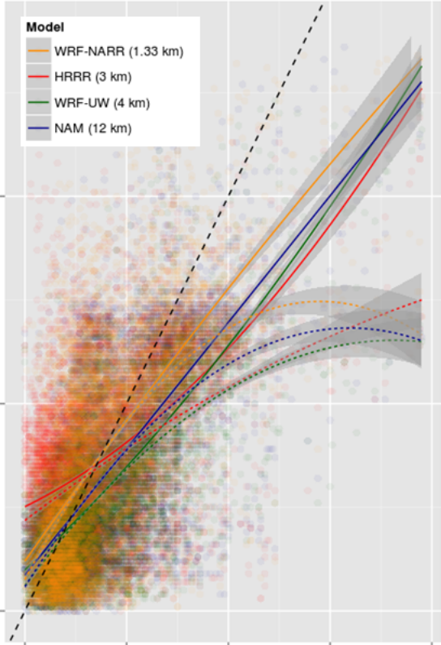
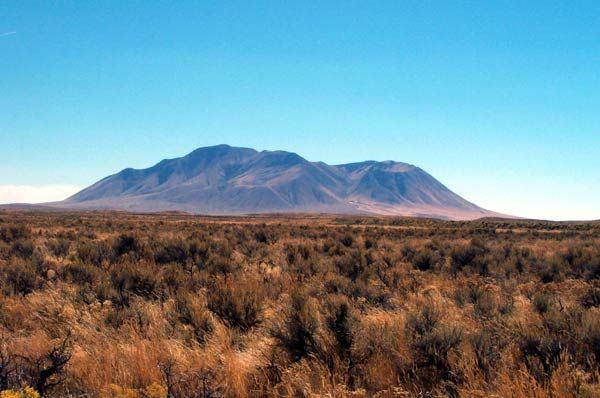
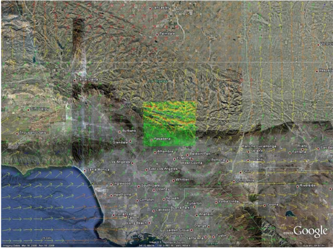
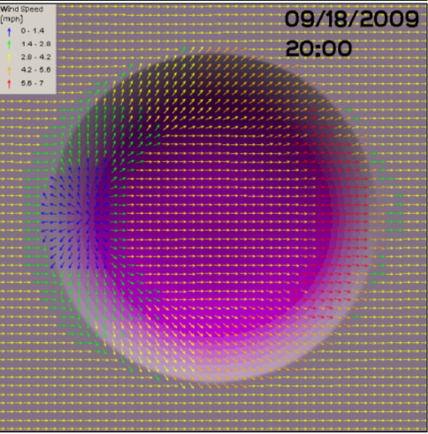
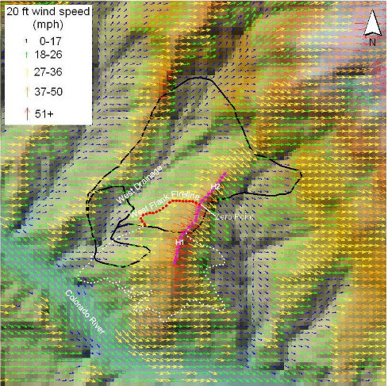
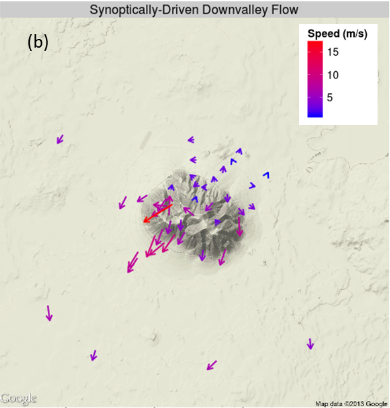
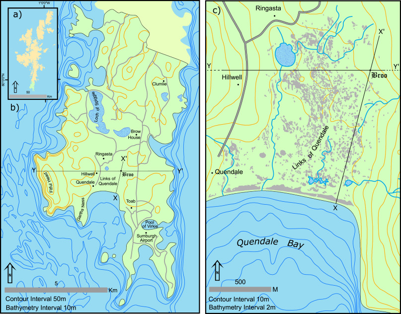
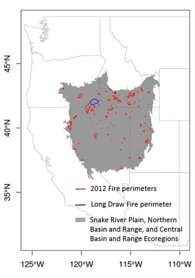
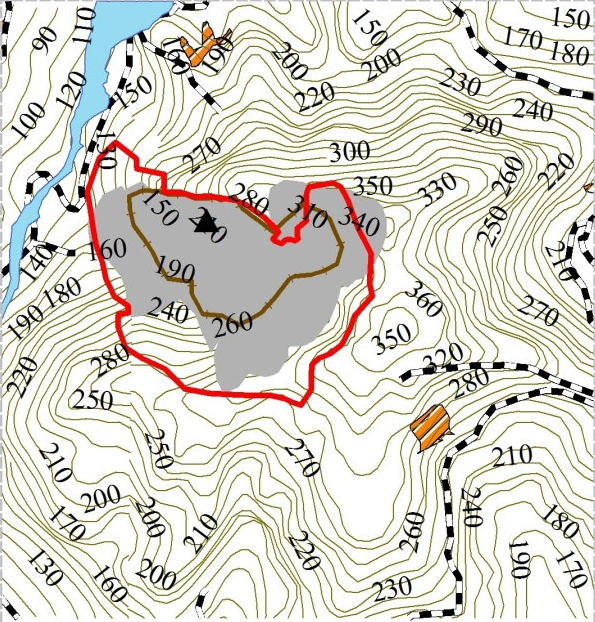
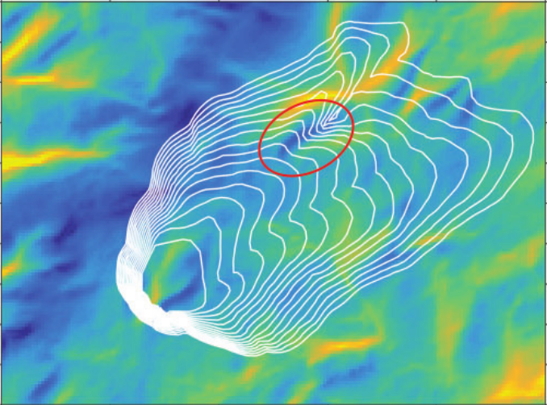

Papers related to and/or using WindNinja
Development and Evaluation of WindNinja

Downscaling surface wind predictions from numerical weather prediction models in complex terrain with WindNinja
Wagenbrenner, NS, Forthofer, JM, Lamb, BK, Shannon, KS, Butler, BW, (2016)Atmos. Chem. Phys. 16:5229-5241, doi:10.5194/acp-16-5229-2016.

A comparison of three approaches for simulating fine-scale surface winds in support of wildland fire management. Part I.
Forthofer, JM, Butler, BW, Wagenbrenner, NS, (2014)Int. J. Wildland Fire, 23:969-931. doi:10.1071/WF12089.

Initialization of high resolution surface wind simulations using National Weather Service (NWS) gridded data.
Forthofer, JM, Shannon, KS, Butler, BW (2011)In ‘11th International Wildland Fire Safety Summit. Missoula, MT’, April 4-8, 2011.

Simulating diurnally driven slope winds with WindNinja.
Forthofer, J.; Shannon, K.; and Butler, B. 2009.In: Proceedings of 8th Symposium on Fire and Forest Meteorological Society; 2009 October 13-15; Kalispell, MT (2,037 KB; 13 pages)

Modeling wind in complex terrain for use in fire spread prediction.
Forthofer, J. M. 2007.Fort Collins, CO: Colorado State University, Thesis. (528 KB; 123 pages)

High-resolution observations of the near-surface wind field over an isolated mountain and in a steep river canyon
B. W. Butler, N. S. Wagenbrenner, J. M. Forthofer, B. K. Lamb, K. S. Shannon, D. Finn, R. M. Eckman, K. Clawson, L. Bradshaw, P. Sopko, S. Beard, D. Jimenez, C. Wold, and M. VosburghAtmos. Chem. Phys., 15, 3785–3801, 2015 doi:10.5194/acp-15-3785-2015
More WindNinja Publications
Amplification of bedrock canyon incision by wind
Jonathan P. Perkins,Noah J. Finnegan & Shanaka L. de Silvahttp://www.nature.com/ngeo/journal/v8/n4/abs/ngeo2381.html
Real-time estimation of wildfire perimeters from curated crowdsourcing
Xu Zhong, Matt Duckham, Derek Chong,& Kevin TolhurstScientific Reports | 6:24206 | DOI: 10.1038/srep24206
Wind field uncertainty in forest fire propagation prediction
Gemma Sanjuan, Carlos Brun, Tomàs Margalef, Ana CortésComputer Architecture and Operating Systems department, Universitat Autònoma de Barcelona, Cerdanyola del Vallès, Spain
Mapping fire behaviour under changing climate in a Mediterranean landscape in Greece
Ioannis Mitsopoulos Giorgos Mallinis Anna Karali Christos Giannakopoulos Margarita Arianoutsou Received: 21 May 2014 / Accepted: 15 October 2015 Springer-Verlag Berlin Heidelberg 2015 DOI 10.1007/s10113-015-0884-0Modeling wildfire potential in residential parcels: A case study of the north-central Colorado Front Range
Rutherford V. Platt, Tania Schoennagel, Thomas T. Veblen, Rosemary L. Sherriff Landscape and Urban Planning 102 (2011) 117–126Wildfire Risk Assessment in a Typical Mediterranean Wildland–Urban Interface of Greece
Ioannis Mitsopoulos Giorgos Mallinis Margarita Arianoutsou in Environmental Management 55(4):900-915 · March 2015 DOI 10.1007/s00267-014-0432-6Simulating seasonal weather influences on wildfire behavior in Glacier National Park, Montana
Anthony DiBiase, Dr. Jennifer Swenson, Advisor 24 February 2014

Little Ice Age catastrophic storms and the destruction of a Shetland Island community
Matthew Bampton, Alice Kelley, Joseph Kelley, Michael Jones, Gerald Bigelowhttps://doi.org/10.1016/j.jas.2017.08.003

A large source of dust missing in Particulate Matter emission inventories? Wind erosion of post-fire landscapes
N.S. Wagenbrenner, S.H. Chung, B.K. LambDirect PDF Link http://doi.org/10.1525/elementa.185

Wind Effect on Wildfire and Simulation of its Spread (Case Study: Siahkal Forest in Northern Iran)
R. Jahdi, A. A. Darvishsefat, V. Etemad, and M. A. MostafaviDirect PDF Link http://ir.jkuat.ac.ke:8080/handle/123456789/4307

Interpolation framework to speed up near-surface wind simulations for data-driven wildfire applications
O. Rios, W. Jahn, E. Pastor, M.M. Valero, E. Planashttps://doi.org/10.1071/WF17027
Evaluation of forest fire models on a large observation database
J.B. Filippi, V. Mallet, B. Naderhttps://doi.org/10.5194/nhess-14-3077-2014